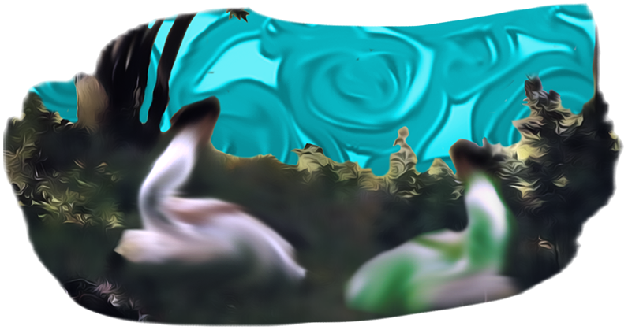

Business Plan: Skratti

Skratti is an exclusive clothing brand that encapsulates the modern beauty of ancient Finland. Skratti works closely with Finnish nature and folklore. Skratti apparel is easily distinguishable from the Skratti print, which is used boldly but in moderation. The vision of Skratti is to give its customers two different ways to wear Skratti apparel. For example, having the bold Skratti print on the inside of a coat means that whether the wearer wears the coat buttoned or unbuttoned majorly changes the look of the coat with the colorful print popping from beneath the coat if it is worn unbuttoned.
Skratti is founded upon the foundation of beautiful and unique prints that serve as the logo and entire corporate design for Skratti. Skratti is not focused on conveying branding through the liberal use of a logo but rather a distinct print that oozes the vision of Skratti as a brand. The marketing of Skratti uses historical paintings and photography from nature that have been altered and manipulated using computer software. The color palette of Skratti marketing uses pastel colors that are commonly used in old Finnish paintings, such as browns, greens, and light blues.
